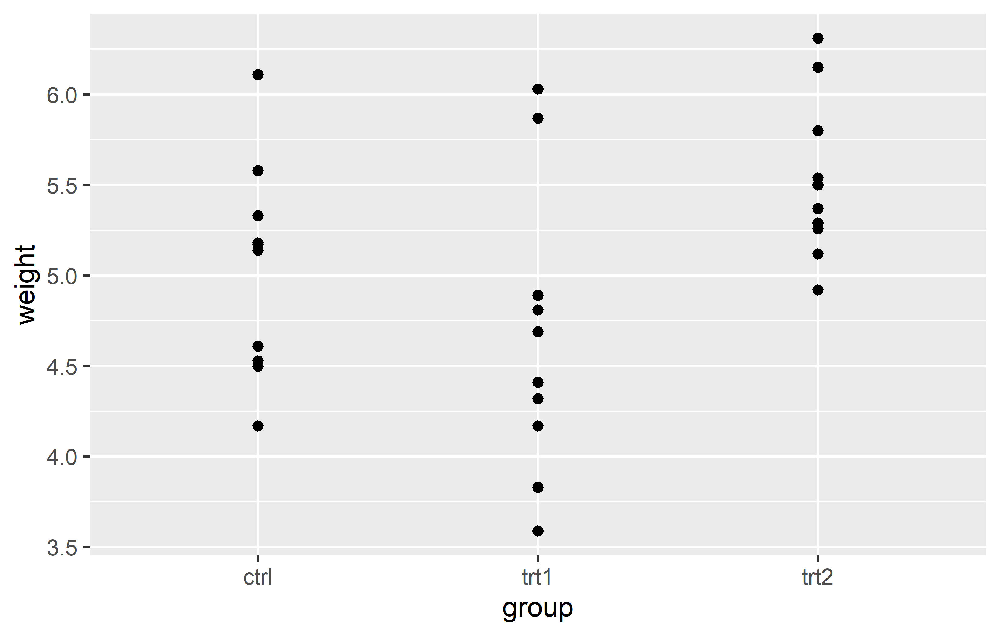
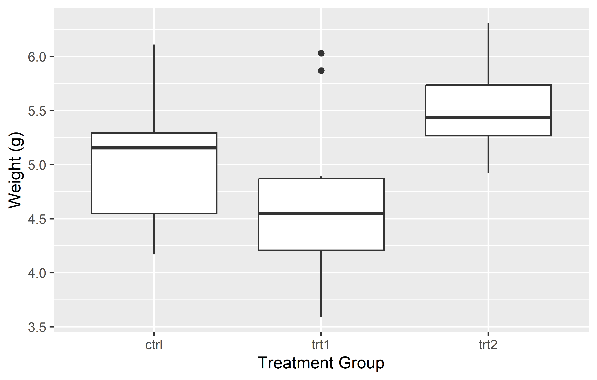

How I use ggplot2
![]()
Before we start
Who this is for
This tutorial serves as an introductory guide to ggplot2, tailored specifically for beginners with no prior exposure to ggplot2. However, it’s worth mentioning that as we delve deeper into the subject, we’ll employ both BaseR and tidyverse code for some data preparations.
In addition, this ggplot2 guide reflects my personal approach and application of visualization techniques, focusing on the disciplines that align with the theme of this website - from agricultural sciences to experimental data from biology or life sciences at large. This tutorial, therefore, may not encompass all facets of ggplot2, but rather those elements that I frequently utilize in these specific domains.
Other resources
Here are some other ggplot2 tutorials and resources that I like:
- Chapter 3: Data Visualisation in (Wickham and Grolemund 2017)
- Cédric Scherer’s (2022a) A ggplot2 tutorial for beautiful plotting in R
- Cédric Scherer’s (2022b) Graphic Design with ggplot2
- Andrew Heiss’ (2023) Data visualization with R
- Claus Wilke’s (2019) Fundamentals of Data Visualization
Packages to install & load
We are using the p_load() function of the {pacman} package to install and load all necessary packages for this tutorial.
pacman::p_load(
ggplot2,
ggrepel,
ggtext
)Showcase
Here are some beautiful ggplots
Let’s start
Let us start by creating a plot that requires a minimum amount of code, but is still informative. We make use the PlantGrowth data, which is directly accessible in R.
ggplot(data = PlantGrowth,
mapping = aes(y = weight, x = group)) +
geom_boxplot()
ggplot(data = PlantGrowth) +
aes(y = weight, x = group) +
geom_boxplot()
Actually, you can see we created the same plot twice using slightly different code. Apologies for immediately confusing you with this, but it would be even more confusing if we postpone this topic.
Let’s try to understand the general approach by looking at the first version of the code. The code for any ggplot always starts with the ggplot() function and then layers are added to it via the + operator.
The data = argument in ggplot() is where you specify the dataset you want to visualize. Think of it as telling ggplot “Here is the data I want you to work with.”
The mapping = aes() argument is where you define the aesthetic mappings, like which columns of the data should be represented on the x and y axes. It’s like giving ggplot specific instructions on “How should you represent this data?” For instance, mapping = aes(x = column1, y = column2) would tell ggplot to use column1 for the x-axis and column2 for the y-axis.
So, together, these two arguments form the fundamental instructions for any ggplot: “Here is my data, and this is how I want you to represent it.”
Looking at our two versions of code that result in the same plot, you can see that they only differ in how the aes() is included. The far more common approach is to include it inside the ggplot() function as in the first version. However, I am not the only one who argues that the second version is simply easier to read, which is why I am using it. Other than that, there is no difference between the two versions.
Finally, there is geom_boxplot(). This function, known as a geometric object or “geom”, represents the type of plot you want to create. In ggplot2, every type of plot is associated with a specific geom function. For our example,geom_boxplot() is used to create a boxplot, which is a great way to visualize the distribution of numerical data and compare it across different groups. The geom_boxplot() function is added to the base ggplot() call using the + operator, just like the other layers. In this way, it’s as if we’re telling ggplot: “And here is the type of plot I want you to create.”. Again - it know already how to draw the boxes because we told it about the data and aesthetic mapping.
Other geoms you might use include geom_point() for scatter plots, geom_line() for line graphs, and many more. Each geom function has its own set of aesthetics and other arguments that you can specify to customize your plot. By using these different geoms, you can create a wide variety of plots to meet your specific data visualization needs.
Now you understand the absolute minimum of how to create a ggplot.
Axes
In ggplot2, the scale_x_* and scale_y_* functions are used to control the appearance of the x and y axes, respectively. These functions allow you to set the scale type (continuous, discrete, etc.), the axis labels, the tick mark labels, and the range of values displayed on the axis.
Regarding the scale type, we need to use scale_y_continuous() (since weight is a continous, metric variable) and scale_x_discrete() (since group is a discrete, categorical variable) for our boxplot.
Name
The name = allows you to change the axis titles.
ggplot(data = PlantGrowth) +
aes(y = weight, x = group) +
geom_boxplot() +
scale_y_continuous(name = "Weight (g)") +
scale_x_discrete(name = "Treatment Group")
Limits
The limits = argument in the scale_*_* functions allows you to specify the range of values displayed on the axis. This can be particularly useful when you want to focus on a specific part of your data. Let’s see how this works in practice with our boxplot example.

In the left plot, we use the limits = argument in scale_y_continuous() to set the y-axis to range from 0 to 7. This works as expected, showing all weights from 0 to 7. However, including only “ctrl” and “trt2” (i.e. the first and last level) in the limits = argument of in scale_x_discrete(), results in only these two groups being displayed on the x-axis. The key point here is that for a discrete scale, the limits = argument needs to include all the levels you want to display.
In the right plot, we again use the limits = argument in scale_y_continuous(), but this time we only specify the lower limit (0) and use NA for the upper limit. This tells ggplot2 to start the y-axis at 0 and end it at the maximum value in the data, which is the default behavior. For the x-axis, we provide all three levels (“trt1”, “ctrl”, “trt2”) in the limits = argument of scale_x_discrete(). This not only ensures that all groups are displayed, but also allows us to control the order in which they appear.
This demonstrates how the limits = argument can be used differently in scale_*_continuous() and scale_*_discrete(). In a continuous scale, it defines the range of values, while in a discrete scale, it specifies which levels to include and their order.
In the end, it’s important to note that setting the limits can exclude data outside the specified range from the plot. This means that the excluded data will not be considered when calculating statistics or generating geoms. In other words, while setting limits can help focus your plot on specific aspects of your data, it can also exclude important information. Always consider the implications of setting limits on your data visualization.
Breaks
The breaks = argument in these functions allows you to specify the locations of the tick marks on the axis.
In the left plot, we use the breaks = argument in scale_y_continuous() to set the y-axis tick marks at 0 and 6. This really results in only two tick marks being displayed on the y-axis. While this is not typically useful for data representation, it serves to illustrate that the breaks = argument can be used to place tick marks at any specified values.
In the right plot, we use the seq() function in the breaks = argument to set the y-axis tick marks at every integer value from 0 to 6. This provides a more informative view of the data, as it allows us to see the weight values at regular intervals.
Instead of having to manually write “6” in breaks = seq(0, 6) you can instead do this:
-
breaks = seq(0, max(PlantGrowth$weight))automatically finds the maximum value in the data -
breaks = scales::breaks_width(1)makes use of thebreaks_width()function in the {scales} package to simply define the width of the breaks
Expand
The expand = argument in the scale_*_* functions allows you to control the expansion of the scale. This is particularly useful when you want to adjust the space between the plotted data and the axes.
By default, ggplot2 adds a small amount of space around the data to ensure that the data doesn’t overlap with the axes. However, there might be situations where you want to adjust this space. For instance, you might want to remove the space below the 0 on the y-axis.
In the left plot, we use the expand = c(0, 0) argument in scale_y_continuous() to simply set the expansion to 0 on both sides of the scale. This removes all extra space around the data. However, this also results in the plot being cut off right at the maximum observation, which might not be desirable.
In the right plot, we use the expansion() function in the expand = argument. This function allows us to set different expansion multipliers for the lower and upper limits of the scale. Here, we set the lower multiplier to 0 to remove the space below 0, and the upper multiplier to 0.05 to add a small amount (= 5%) of space above the maximum observation.
For a better understanding of how this expansion-thing works, I found this cheat sheet to be really insightful.